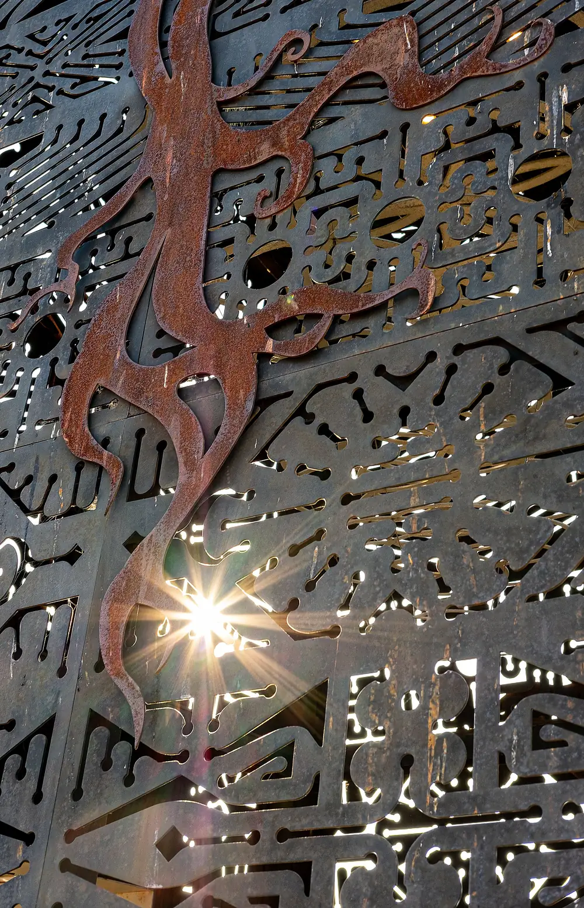
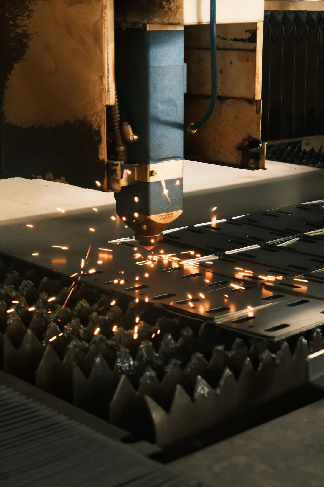
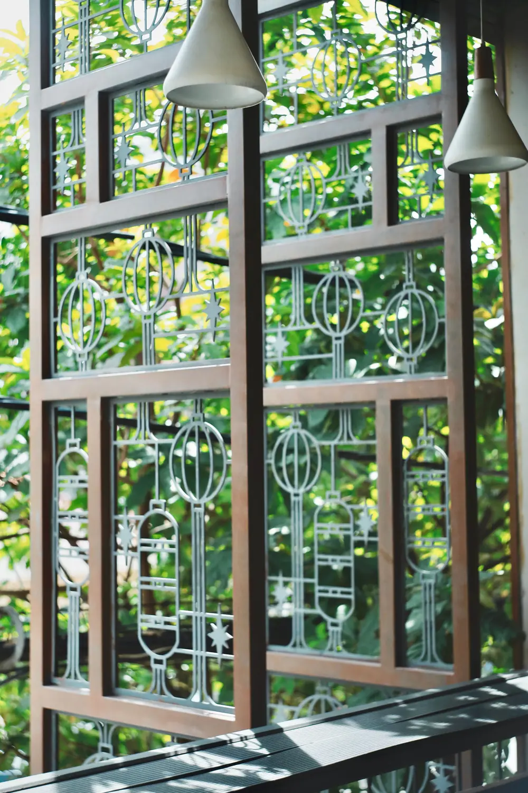
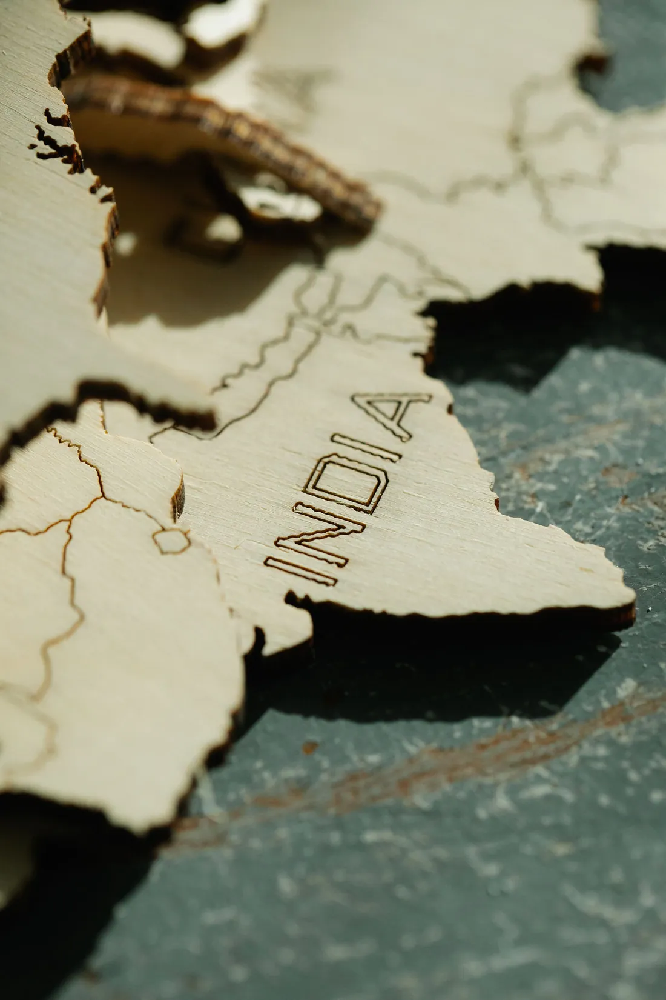

Pagar, fasad, dan teralis
Motif berlubang pada plat besi atau galvanis untuk pagar, fasad, dan pintu.

Kirimkan file desain Anda, terima penawaran harga melalui WhatsApp, lalu setiap potongan dikerjakan sesuai ukuran gambar.
Anda mengirimkan gambar kerja, kami memotongnya tepat di garis desain tersebut. Lubang, lengkung, dan pola rumit dikerjakan langsung dari file, tanpa cetakan dan tanpa gerinda, sehingga ukuran setiap potongan sama dari lembar pertama hingga terakhir.

Logam dipotong dengan fiber laser, sedangkan akrilik dan kayu dengan laser CO₂. Pilih material untuk melihat rinciannya.
Pagar motif, fasad, bracket, dan komponen mesin dipotong langsung dari file desain.
 Lihat plat besi & galvanis
Lihat plat besi & galvanisHuruf timbul, signage, dan peralatan dapur dengan tepi rapi dan ukuran presisi.
 Lihat stainless steel
Lihat stainless steelBeberapa pekerjaan yang paling sering dikerjakan dengan laser cutting, untuk rumah, usaha, maupun industri.

Motif berlubang pada plat besi atau galvanis untuk pagar, fasad, dan pintu.

Sekat ruangan dan panel dinding bermotif dari plat, kayu, atau MDF.

Dudukan, plat penyambung, dan komponen mesin dengan ukuran yang seragam.

Huruf akrilik atau stainless, plakat penghargaan, dan stand produk dengan tepi rapi.

Puzzle, maket, hiasan dinding, dan hadiah dari kayu atau MDF.

Logo usaha, nama, dan nomor seri yang ditulis permanen dengan laser.
Kisaran ketebalan yang umum dikerjakan. Batas akhir menyesuaikan mesin dan selalu dikonfirmasi dalam penawaran.
Tidak ada pembayaran sebelum Anda menyetujui harga dan perkiraan waktu pengerjaan.
Kirimkan file DXF, DWG, CDR, AI, atau PDF melalui WhatsApp, beserta material, ketebalan, dan jumlah.
Kami menghitung harga dan perkiraan waktu pengerjaan. Pekerjaan dimulai setelah Anda menyetujuinya.
File disiapkan untuk mesin, material dipotong, lalu setiap potongan diperiksa ukurannya.
Hasil diambil langsung atau dikirim melalui kurir maupun ekspedisi sesuai kesepakatan.
Pertanyaan lain dapat langsung disampaikan melalui WhatsApp.
File vektor dalam format DXF, DWG, CDR, AI, PDF, atau SVG. Pastikan ukuran gambar sudah dalam skala sebenarnya (milimeter) dan semua teks sudah diubah menjadi kurva.
Bisa. Kirimkan sketsa, foto contoh, atau gambar tangan beserta ukurannya. Kami akan menginformasikan apakah gambar kerja dapat dibuatkan terlebih dahulu sebelum dipotong.
Harga ditentukan oleh jenis dan ketebalan material, panjang total jalur potong, jumlah lubang, jumlah pesanan, serta pekerjaan lanjutan bila ada.
Karena itu, penawaran paling akurat diberikan setelah kami menerima file desain Anda.
Bisa. Pesanan satuan untuk prototipe maupun kebutuhan pribadi tetap kami layani. Ketentuan biaya minimum, bila ada, kami sampaikan dalam penawaran.
Isi rincian pesanan Anda. Pesan WhatsApp akan tersusun otomatis, lalu lampirkan file desain di chat tersebut.